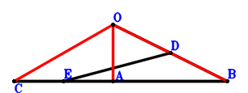
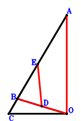

Exercise 8： Let E, D be the midpoints of CA, OB, respectively. C, A, B are collinear and \(ED^{2}=\dfrac{AB \cdot CB}{2}\). Prove that \(OB^{2}=CO^{2} + OA^{2}\).

\(\because \) D is the midpoint of OB \(\therefore \small\overrightarrow{BD}=\dfrac{\small\overrightarrow{BO}}{2}\).\(\because \) E is the midpoint of CA \(\therefore \small\overrightarrow{BE}=\dfrac{\small\overrightarrow{BA}}{2} + \dfrac{\small\overrightarrow{BC}}{2}\).\(\because \) C, A, B are collinear and \(ED^{2}=\dfrac{AB \cdot CB}{2}\) \( \therefore- \small\overrightarrow{BA} \cdot \small\overrightarrow{CB} - 2 \small\overrightarrow{ED}^{2}=\small\overrightarrow{BA} \cdot \small\overrightarrow{BC} - 2 \left(\small\overrightarrow{BD} - \small\overrightarrow{BE}\right)^{2}=\small\overrightarrow{BA} \cdot \small\overrightarrow{BC} - 2 \left(- \dfrac{\small\overrightarrow{BA}}{2} - \dfrac{\small\overrightarrow{BC}}{2} + \dfrac{\small\overrightarrow{BO}}{2}\right)^{2}=- \dfrac{\small\overrightarrow{BA}^{2}}{2} + \small\overrightarrow{BA} \cdot \small\overrightarrow{BO} - \dfrac{\small\overrightarrow{BC}^{2}}{2} + \small\overrightarrow{BC} \cdot \small\overrightarrow{BO} - \dfrac{\small\overrightarrow{BO}^{2}}{2}=0.\)In conclusion, \(\small\overrightarrow{OA}^{2} - \small\overrightarrow{OB}^{2} + \small\overrightarrow{OC}^{2}=- \small\overrightarrow{BO}^{2} + \left(\small\overrightarrow{BA} - \small\overrightarrow{BO}\right)^{2} + \left(\small\overrightarrow{BC} - \small\overrightarrow{BO}\right)^{2}=\small\overrightarrow{BA}^{2} - 2 \small\overrightarrow{BA} \cdot \small\overrightarrow{BO} + \small\overrightarrow{BC}^{2} - 2 \small\overrightarrow{BC} \cdot \small\overrightarrow{BO} + \small\overrightarrow{BO}^{2}=0\), that is, \(OB^{2}=CO^{2} + OA^{2}\).
Exercise 13： Let DAOC be a parallelogram. C, A, B are collinear and \(BO^{2}=2 AB \cdot CB\). Prove that \(DB^{2}=AO^{2} + CO^{2}\).
Exercise 26： Let E, D be the midpoints of CA, BO, respectively. C, B, A are collinear and \(CO^{2}=2 BA \cdot CB\). Prove that \(AO^{2}=BO^{2} + 4 ED^{2}\).

\(\because \) D is the midpoint of BO \(\therefore \small\overrightarrow{OD}=\dfrac{\small\overrightarrow{OB}}{2}\).\(\because \) E is the midpoint of CA \(\therefore \small\overrightarrow{OE}=\dfrac{\small\overrightarrow{OA}}{2} + \dfrac{\small\overrightarrow{OC}}{2}\).\(\because \) C, B, A are collinear and \(CO^{2}=2 BA \cdot CB\) \( \therefore2 \small\overrightarrow{AB} \cdot \small\overrightarrow{CB} + \small\overrightarrow{OC}^{2}=\small\overrightarrow{OC}^{2} + 2 \left(- \small\overrightarrow{OA} + \small\overrightarrow{OB}\right) \cdot \left(\small\overrightarrow{OB} - \small\overrightarrow{OC}\right)=- 2 \small\overrightarrow{OA} \cdot \small\overrightarrow{OB} + 2 \small\overrightarrow{OA} \cdot \small\overrightarrow{OC} + 2 \small\overrightarrow{OB}^{2} - 2 \small\overrightarrow{OB} \cdot \small\overrightarrow{OC} + \small\overrightarrow{OC}^{2}=0.\)In conclusion, \(- 4 \small\overrightarrow{DE}^{2} + \small\overrightarrow{OA}^{2} - \small\overrightarrow{OB}^{2}=\small\overrightarrow{OA}^{2} - \small\overrightarrow{OB}^{2} - 4 \left(- \small\overrightarrow{OD} + \small\overrightarrow{OE}\right)^{2}=\small\overrightarrow{OA}^{2} - \small\overrightarrow{OB}^{2} - 4 \left(\dfrac{\small\overrightarrow{OA}}{2} - \dfrac{\small\overrightarrow{OB}}{2} + \dfrac{\small\overrightarrow{OC}}{2}\right)^{2}=2 \small\overrightarrow{OA} \cdot \small\overrightarrow{OB} - 2 \small\overrightarrow{OA} \cdot \small\overrightarrow{OC} - 2 \small\overrightarrow{OB}^{2} + 2 \small\overrightarrow{OB} \cdot \small\overrightarrow{OC} - \small\overrightarrow{OC}^{2}=0\), that is, \(AO^{2}=BO^{2} + 4 ED^{2}\).
Exercise 39： Let BCDA be a parallelogram. OA=BO and CO=OD. Prove that CB⊥BA.